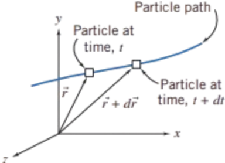
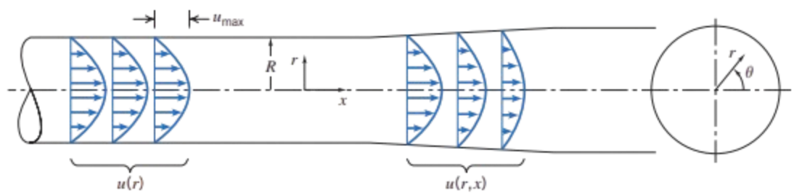

The translation of a fluid particle is connected with the velocity field \(\vec{V} = \vec{V}(x, y, z, t)\) that previously discussed
Stated simply, the problem is: Given the velocity field, \(\vec{V} = \vec{V}(x, y, z, t)\), find the acceleration of a fluid particle, \(\vec{a}_p\)
\[ a_{r_p} = V_r \frac{\partial V_r}{\partial r} + \frac{V_\theta}{r} \frac{\partial V_r}{\partial \theta} - \frac{V_\theta^2}{r} + V_z \frac{\partial V_r}{\partial z} + \frac{\partial V_r}{\partial t} \] \[ a_{\theta_p} = V_r \frac{\partial V_\theta}{\partial r} + \frac{V_\theta}{r} \frac{\partial V_\theta}{\partial \theta} + \frac{V_r V_\theta}{r} + V_z \frac{\partial V_\theta}{\partial z} + \frac{\partial V_\theta}{\partial t} \] \[ a_{z_p} = V_r \frac{\partial V_z}{\partial r} + \frac{V_\theta}{r} \frac{\partial V_z}{\partial \theta} + V_z \frac{\partial V_z}{\partial z} + \frac{\partial V_z}{\partial t} \]
1Fox and McDonald's Introduction to Fluid Mechanics, 8th Edition.